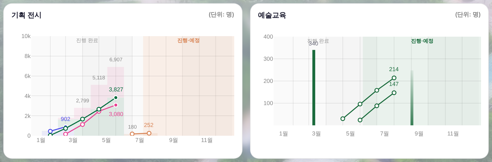
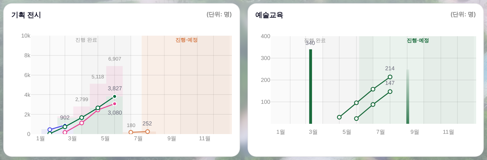

지시(운영자 260809) 「숫자는 색이 각기 다른 게 아니라, 조금 흐린 검정으로」 → 확인 질의(막대는 통일했고 선 끝 숫자만 정본 「선색」으로 남았다)에
승인 260809-2 「응 그렇게 해주면 됨」 · 대상 = _bizDrawExhibMonthly(기획 전시 꼭자락) + _bizDrawSalesBars 교육 꼭자락 ·
화면 = 결정적 목데이터 tools/qa_mock_ops.mjs ?qa=admin · 실API·PII 미접촉.
| 카드 | 전 | 후 | 비고 |
|---|---|---|---|
| 기획 전시 꼭자락 | 4갈래(공간색) | 1갈래 #6B6B7B | 902·3,827·3,080·252 — 인디고/그린/핑크/살몬 → 흐린 검정 |
| 기획 전시 보조 합계 | 1갈래 #888 | 1갈래 #888 (그대로) | 9.5px --dim = 중립 사다리 한 단 아래 보조 표식(색 갈래 아님) |
| 예술교육 | 2갈래(막대 흐린 검정 + 선 그린) | 1갈래 #6B6B7B | 340(막대) · 214·147(선) |
어느 선의 값인지는 자리(그 선의 꼭자락)가 말한다 — 색은 더 이상 그 일을 하지 않는다.


--neutral-text 한 벌(막대 #18과 같은 잉크). 보조 회색 ⓑ는 그대로.tools/check_exchart.py 검사 ⑧ 증설(6종 → 7종 · 하드 0) = 잉크 한 벌 선언 실존 + 꼭자락 라벨이 _lbInk인가._lbInk → L.col로 되돌리면 rc=1(「선색으로 되돌아갔다」) · 원복 rc=0.